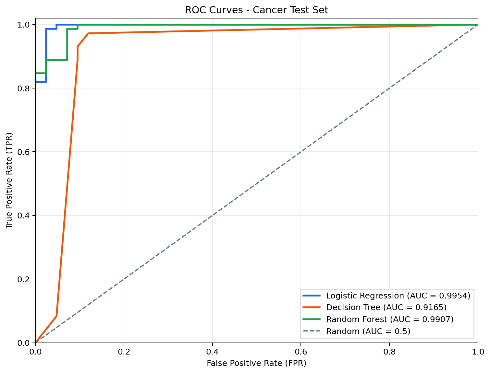
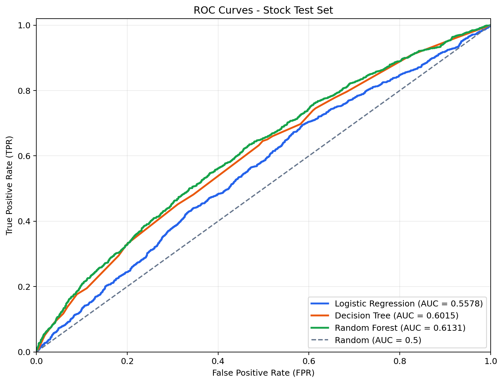

页面内容用于机器学习课程练习。股票分类结果不构成投资建议，医疗数据结果也不能替代临床判断。
三种分类算法
从线性概率模型到单棵树，再到多棵树集成。
逻辑回归
- 把特征线性组合经过 Sigmoid 函数转换为类别 1 的估计概率。
- 速度快、结果稳定、系数较容易解释，适合作为分类基线。
- 默认形成线性决策边界，本次训练前对数值特征进行标准化。
决策树与随机森林
- 决策树用特征阈值递归切分样本，能够表达非线性关系，但容易过拟合。
- 随机森林对样本和特征随机抽样，训练多棵树后投票或平均概率。
- 多树集成通常比单棵树稳定，但计算开销更大，整体规则也不够直观。
混淆矩阵、ROC 与 AUC
不同指标回答不同问题，不能只观察准确率。
混淆矩阵
- TP 与 TN 是预测正确的正类和负类；FP 与 FN 是两种不同误判。
- Precision 关注预测为正的样本有多少正确，Recall 关注真实正类找出了多少。
- 类别不平衡时，总是预测多数类也可能得到较高 Accuracy。
ROC 与 AUC
- ROC 在不同概率阈值下绘制 FPR 与 TPR，越靠近左上角越好。
- AUC 是 ROC 曲线下面积；0.5 接近随机排序，1.0 代表完美区分。
- AUC 衡量整体排序能力，实际应用仍需按误判成本选择分类阈值。
Python 实验流程
预处理和模型封装在同一 Pipeline 中，避免测试集信息泄漏。
- 加载数据 读取乳腺癌或股票 CSV，将应变量检查并转换为 0/1。
- 划分样本 按标签分层随机划分 80% 训练集和 20% 测试集。
- 训练模型 训练逻辑回归、决策树和 300 棵树组成的随机森林。
- 评价输出 计算混淆矩阵、Accuracy、F1 和 AUC，并绘制 ROC 曲线。
乳腺癌数据测试结果
测试集 114 个样本；原始标签 1 代表良性，因此 ROC 正类为良性类别。
| 模型 | Accuracy | Precision | Recall | F1 | AUC | TN / FP / FN / TP |
|---|---|---|---|---|---|---|
| Logistic Regression | 0.9737 | 0.9859 | 0.9722 | 0.9790 | 0.9954 | 41 / 1 / 2 / 70 |
| Random Forest | 0.9386 | 0.9577 | 0.9444 | 0.9510 | 0.9907 | 39 / 3 / 4 / 68 |
| Decision Tree | 0.9386 | 0.9333 | 0.9722 | 0.9524 | 0.9165 | 37 / 5 / 2 / 70 |
股票分类数据补充结果
测试集 4155 条记录；现有基本面因子仅表现出较弱的标签区分能力。
| 模型 | Accuracy | Precision | Recall | F1 | AUC | TN / FP / FN / TP |
|---|---|---|---|---|---|---|
| Random Forest | 0.6094 | 0.5271 | 0.3188 | 0.3973 | 0.6131 | 1997 / 480 / 1143 / 535 |
| Decision Tree | 0.6072 | 0.5244 | 0.2950 | 0.3776 | 0.6015 | 2028 / 449 / 1183 / 495 |
| Logistic Regression | 0.5954 | 0.4348 | 0.0060 | 0.0118 | 0.5578 | 2464 / 13 / 1668 / 10 |
ROC 曲线与结果解读
虚线是 AUC 为 0.5 的随机基准。


实验结论
模型复杂度并不等于样本外效果。
- 乳腺癌数据上逻辑回归 AUC 最高，说明简单线性模型已经能形成有效决策边界。
- 决策树需要通过最大深度和最小叶节点样本数限制复杂度，随机森林则通过多树集成降低方差。
- 股票数据中逻辑回归几乎总是预测类别 0，证明只看 Accuracy 会掩盖正类识别失败。
- 真实股票研究应按日期进行样本外或滚动验证，并检查标签构造、前视偏差和交易成本。
相关文件
查看可复现实验代码、完整报告、模型输出和最终提交 PDF。